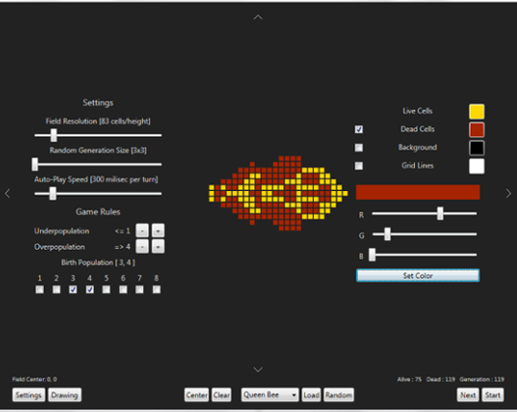

The Game of Life is a kind of simulation developed by John H. Conway, a British mathematician. It's a cellular automaton, which is a mathematical model of behavior based on some very simple rules.
You play the game on an infinite grid, consisting of cells that can be either dead or alive. Before you start playing, you select which cells you want to be alive in the first generation. Then you run the simulation. Every time you make a new generation you follow these rules:
- If a cell has less than 2 neighbours, it dies from underpopulation
- If a cell has more than 3 neighbours, it dies from overpopulation
- If a dead cell has 3 live neighbours, it is born
(Of course you can change these rules when running the program)
Patterns that emerged using the game have been used in a variety of disciplines, from the computer sciences to the life sciences, because of the surprising structures that can evolve from what is essentially a chaotic system of loose parts.
Manual
In the bottom of the screen you can see the menu bar. On the right are the time controls, in the middle are the field controls, and on the left are settings.
Time Controls
Next : Generates the next generation
Start/Stop : Start or stop automatically making new generations. The speed can be selected in settings.
Field Controls
Random : Generate a random field, with the size selected in settings.
Load : Load the pattern selected in the box in the field.
Clear : Remove all cells from the field